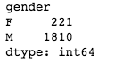
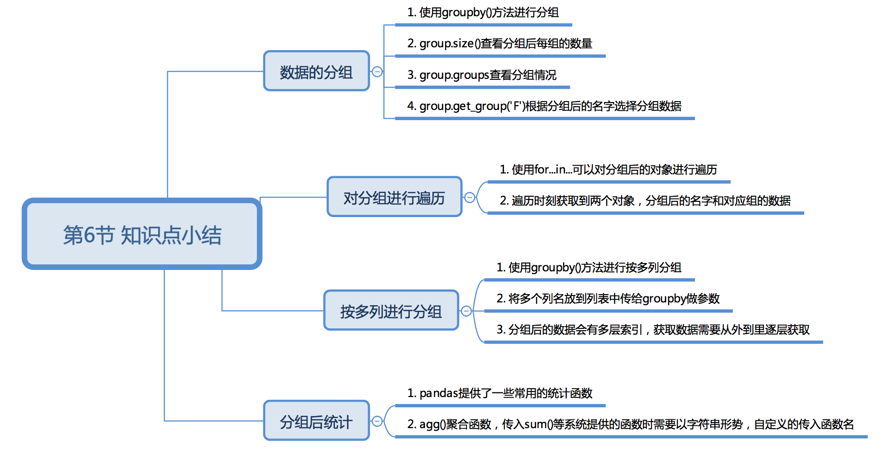
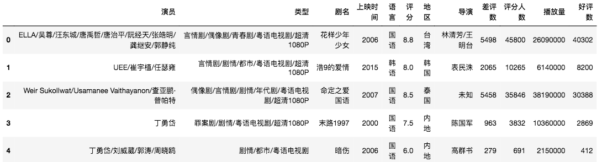

1. 给数据分个班
备用标题：人以群分，数以组聚
1.1.1. 课程介绍
Hello, 我是小K，很高兴又和大家见面了，我们一起继续学习Python数据分析。
为了让你能不受干扰的在学习数据分析路上饱览胜景，请将屏幕调整成全屏，Windows系统：请按F11（或Fn+F11)；苹果系统：请同时按control+command+F。
上一节我们解锁了如何对数据的合并、筛选和数据的排序的技能，大家要记得经常的复习和练习呦！
俗话说：“人与类聚，物以群分”，这一节我们将解锁数据的分组以及分组后统计。Pandas的分组相对于Excel会更加简单和灵活。
1.1.2. 数据的分组
本节我们将以福布斯2018年度亿万富翁数据为实验数据，探索数据分组的奥秘，运行下面的代码，来了解一下数据的基本情况：
此处是代码 ————————————— ——————————— 终端
import pandas as pd
df = pd.read_excel('./data/forbes_2018.xlsx')
print(df.head())
print(df.shape)
数据详情
- name-名字
- lastName-姓
- age-年龄
- country-国家
- gender-性别
- wealthSource-财富来源
根据结果我们了解到，共有2031条数据，那么在这些富翁中男女比例是多少呢？
要解决这个问题，我们最好的办法就是根据性别分成男女两组，然后分别计算他们的人数，从而计算他们的占比。
Pandas提供了一个灵活高效的groupby功能，它使你能以一种自然的方式对数据集进行切片、切块、摘要等操作。
我们一起看下如何使用groupby()方法根据性别将富翁们进行分组，运行下方代码，查看结果。
此处是代码 ————————————— ——————————— 终端
import pandas as pd
df = pd.read_excel('./data/forbes_2018.xlsx')
# 根据gender列进行分组
groups = df.groupby('gender')
print(groups)
根据结果可以发现，分组后的结果为DataFrameGroupBy object，是一个分组后的对象。
用groupby的size方法可以查看分组后每组的数量，并返回一个含有分组大小的Series：
print(groups.size())

根据上面的方法，你是否已经有了如何获取男女的占比是多少的思路呢？别犹豫，在下面的代码框中一试便知：
此处是代码 ————————————— ——————————— 终端
import pandas as pd
df = pd.read_excel('./data/forbes_2018.xlsx')
# 请根据的你的思路用代码在下面实现
怎么样？不管对错有想法就要试一试，现在请看小K的答案：
import pandas as pd
df = pd.read_excel('./data/forbes_2018.xlsx')
group = df.groupby('gender')
for gender,value in group.size().items():
# 计算每组的占比
accounted = value/df.shape[0]
# 将小数转化成百分数
bb = "%.2f%%" % (accounted * 100)
print('福布斯2018年度亿万富翁中{}共{}位，占比是{}'.format(gender,value, bb))
df.groupby('gender')是根据gender列对整个数据进行分组，同样我们也可以只对一列数据进行分组，只保留我们需要的列数据。
例如：我们通过性别gender，只对age列数据进行分组。
group = df['age'].groupby(df['gender'])
# 查看分组
print(group.groups)
# 根据分组后的名字选择分组
print(group.get_group('F'))
将上面代码复制到代码框，运行产看结果：
此处是代码 ————————————— ——————————— 终端
import pandas as pd
df = pd.read_excel('./data/forbes_2018.xlsx')
代码df['age'].groupby(df['gender'])的逻辑是：取出df中age列数据，并且对该列数据根据df['gender']列数据进行分组操作。
上面的带也可改写成df.groupby(df['gender'])['age']，它的逻辑是：将df数据通过df['gender']进行分组，然后再取出分组后的age列数据。两种写法达到的效果是一样的。
group.groups的结果是一个字典，字典的key是分组后每个组的名字，对应的值是分组后的数据，此方法方便我们产看分组的情况。
group.get_group('F')这个方法可以根据具体分组的名字获取，每个组的数据。
1.1.3. 对分组进行遍历
上面我们通过groupby()和size()两个方法以及以前所学的一些技能计算出了富豪的男女占比。
如果我们还想要分别查看富豪中男、女的最大年纪，最小年纪以及平均年龄，看看我们是不是还有机会成为他们中的一员😊。
groups.get_group('F')可以获取分组后某一个组的数据，'F'为组的名字，这样我们就可以对某一个组进行处理。
下面的代码实现了获取'F'组的最大年纪，最小年纪以及平均年龄，运行代码并观察结果。
此处是代码 ————————————— ——————————— 终端
import pandas as pd
df = pd.read_excel('./data/forbes_2018.xlsx')
groups = df.groupby('gender')
# 获取F组的数据
f_group = groups.get_group('F')
# 获取平均值
f_mean = f_group['age'].mean()
# 获取最大值
f_max = f_group['age'].max()
# 获取最小值
f_min = f_group['age'].min()
print(f_mean,f_max,f_min)
代码中我们使用get_group()获取了F组的数据，并使用mean()、max()、min()等统计函数快速获取我们的指标值。
pandas里常用的统计函数包括：
count( )：统计列表中非空数据的个数nunique( )：统计非重复的数据的个数sum( )：统计列表中所有数值的和mean( )：计算列表中数据的平均值median( )：统计列表中数据的中位数max( )：求列表中数据的最大值min( )：求找列表中数据的最小值
上面的代码成功的计算出了我们想要的数据，我们也可以遍历分组后的数据，并获取他们的最大年纪，最小年纪以及平均年龄。
运行下面的代码，看一下如何遍历分组后的数据。
此处是代码 ————————————— ——————————— 终端
import pandas as pd
df = pd.read_excel('./data/forbes_2018.xlsx')
groups = df.groupby('gender')
for group_name,group_df in groups:
print(group_name,group_df.shape)
上面代码中的将分组后的对象groups进行遍历，可以获取到group_name每个组的名字，group_df每个组的数据。
接下来我们自己在下面代码框中练习使用遍历的方法，计算出每一组中的最大年纪，最小年纪以及平均年龄。
此处是代码 ————————————— ——————————— 终端
现在一起来看一下小K的答案：
import pandas as pd
df = pd.read_excel('./data/forbes_2018.xlsx')
groups = df.groupby('gender')
for group_name,group_df in groups:
f_mean = group_df['age'].mean()
f_max = group_df['age'].max()
f_min = group_df['age'].min()
print('{}组的最大年龄是{}，最小年龄是{}，平均年龄是{}'.format(group_name,f_max,f_min,f_mean))
1.1.4. 按多列进行分组
刚刚我们完成了将富豪以性别进行分组，并拿到了年龄的最大值和最小值以及平均值等信息。
现在我们完成一个相对复杂的需求，需要产看每个国家男女的富豪的数量。那就需要我们将富豪们先按国家分组，然后在按性别分组。
按照上面的分析，难道我们要写两次groupby的分组操作？NO，我们强大的groupby()方法是支持按照多列进行分组。
运行下面的代码，看下groupby()是如何进行多列分组的：
此处是代码 ————————————— ——————————— 终端
import pandas as pd
df = pd.read_excel('./data/forbes_2018.xlsx')
group=df.groupby(['country','gender'])
df1 = group.size()
print(df1)
当需要按多列进行分组的时候，groupby方法里面我们传入的一个列表，列表中分别存储分组依据的列名。
注意：列表中列名的顺序，确定了先按country列进行分组，然后再按gender列分组。不同的顺序，产生的分组名字是不同的。
group.size()返回的结果中发现索引值是多层的，那么对于多层索引的值我们如何去获取呢？
此处是代码 ————————————— ——————————— 终端
import pandas as pd
df = pd.read_excel('./data/forbes_2018.xlsx')
group=df.groupby(['country','gender'])
df1 = group.size()
size = df1['Austria']['F']
print(size)
通过代码，我们发现对于多层索引值的获取，只需要从外往里一层一层的取就可以了，就像我们睡觉之前，需要先脱外衣再脱掉内衣是一样的😊。
1.1.5. 对分组后数据进行统计
数据统计（也称为数据聚合）是数据处理的最后一步，通常是要使每一个数组生成一个单一的数值。
上面我们已经了解了一些Pandas提供好的统计函数，例如:mean()、max()等函数。
为大家使用更为灵活，pandas提供了一个 agg( )方法用来对分组后的数据进行统计。
接下来我们来体验一下，agg()方法的使用：
此处是代码 ————————————— ——————————— 终端
import pandas as pd
df = pd.read_excel('./data/forbes_2018.xlsx')
groups = df.groupby('gender')
for group_name,group_df in groups:
f_se = group_df['age'].agg(['max','min','mean'])
print('{}组的最大年龄是{}，最小年龄是{}，平均年龄是{}'.format(group_name,f_se[0],f_se[1],f_se[2]))
观察上面的代码，可以发现在使用agg()函数时，我们可以将多个统计函数一起放到一个agg()函数中。
并且需要注意的是，如果是统计函数是pandas提供的，我们只需将函数的名字以字符串的形势存储到列表中即可，例如：将max()改成'max'。
这样不仅简化了我们的代码，在添加和删减统计函数的时候我们只需更改agg()函数中list就可以了。是不是很方便。
它的好处还不止这些，比如现在又有新的需求，要计算年龄的最大值和最小值的差值。但是，pandas并没有提供这样统计函数，所以就需要我们进行自己定义一个统计函数：
def peak_range(df):
"""
返回数值范围
"""
return df.max() - df.min()
现在我们看一下自己定义的统计函数，如何使用：
此处是代码 ————————————— ——————————— 终端
import pandas as pd
df = pd.read_excel('./data/forbes_2018.xlsx')
groups = df.groupby('gender')
def peak_range(df):
"""
返回数值范围
"""
return df.max() - df.min()
for group_name,group_df in groups:
f_se = group_df['age'].agg(['max','min','mean',peak_range])
print(f_se[0],f_se[1],f_se[3])
peak_range(df)函数是我们自定的函数，并设置了一个df参数,为了接收group_df['age']的值。
注意：自定义的函数名字在传入agg()函数中时不需要转换成字符串。
1.1.6. 本节总结
本节我们通过groupby方法对数据进行分组以及根据多列进行分组，并且对分组后的数据进行统计。

1.1.7. 下节预告
1.1.8. 练习1：好色的不止是女人
题目：好色的不止是女人
题目要求：
本次练习采用的是网易考拉海淘网口红一天的销售数据。每条数据都包含了品牌、折扣价、原价、是否自营、评论数、国家共6列信息。
- 统计每种口红的平均折扣价。
- 分别统计每种口红自营评论数总和和非自营的评论数总和。
参考答案：
import pandas as pd
df = pd.read_excel('./data/lipsticks.xlsx')
print(df.head())
# 1. 统计每种口红的平均折扣价。
# 根据品牌进行分类
groups = df.groupby('品牌')
for group_name,group_df in groups:
mean = group_df['折扣价'].mean()
str_mean = '{}的平均折扣价为{}'.format(group_name,mean)
print(str_mean)
# 2. 分别统计每种口红自营评论数总和和非自营的评论数总和
# 根据品牌列和是否自营列进行分组
groups = df.groupby(['品牌','是否自营'])
for group_name,group_df in groups:
group_sum = group_df['评论数'].sum()
str_sum = '{}{}的评论数为{}'.format(group_name[0],group_name[1],group_sum)
print(str_sum)
1.1.9. 练习2: 那些年错过的电影
题目：那些年错过的电影
题目要求：
本次练习采用的是爱奇艺视频数据。共有6万多条电影数据，每条数据包含12列信息，文件的路径为./data/aiqiyi.xlsx，以下获取的前五条数据：

- 取出每年电影评分前两名电影的名字
- 哪一年的电影总评分最高
参考答案：
import pandas as pd
df = pd.read_excel('./data/aiqiyi.xlsx')
groups = df.groupby('上映时间')
for group_name,group_df in groups:
result = group_df.sort_values(by='评分',ascending=False)[0:2]
print(group_name,result['整理后剧名'])
第二个问题参考答案：
import pandas as pd
df = pd.read_excel('./data/aiqiyi.xlsx')
groups = df.groupby('上映时间')
year=groups.sum().sort_values(by='评分',ascending=False).index.to_list()[0]
print(year)